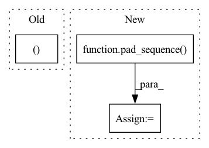

Pattern ID :24060
Before Change
train_masks = (train_questions != pad_val)
train_questions, train_responses = \
train_questions * train_masks.long(), \
train_responses * train_masks.long()
train_deltas = one_hot(train_questions[1:], self.num_q)
train_targets = train_responses[1:]
After Change
r = [LongTensor(arr).unsqueeze(-1) for arr in r]
q = pad_sequence(q, padding_value=pad_val).squeeze()
r = pad_sequence( r, padding_value=pad_val) .squeeze()
mask = (q != pad_val)
q, r = q * mask.long(), r * mask.long()In pattern: SUPERPATTERN
Frequency: 4
Non-data size: 3
Instances Fragment ID: 74683555
Project Name: hcnoh/knowledge-tracing-collection-pytorch
Commit Name: b2dbd4eb667cd03959dd62ce798a2371fd649837
Time: 2021-03-15
Author: rhc0624@gmail.com
File Name: models/dkt.py
M Class Name: DKT
N Class Name: DKT
M Method Name: train_model(5)
N Method Name: train_model(5)
M Parent Class: Module
N Parent Class: Module
M File Name: models/dkt.py
N File Name: models/dkt.py
M Start Line: 47
M End Line: 137
N Start Line: 47
N End Line: 121
Before Change
for mel in mels:
mel = mel.unsqueeze(0)
mel_emb, _ = self.mel_rnn(mel)
mel_emb = mel_emb.squeeze(0)
mel_embs.append(mel_emb)
After Change
max_mel_len = max(mel_lens)
max_wav_len = max_mel_len * self.hop_len
pad_mels = pad_sequence( mels, batch_first=True)
pack_mels = pack_padded_sequence(
pad_mels, torch.tensor(mel_lens), batch_first=True, enforce_sorted=False
)
pack_mel_embs, _ = self.mel_rnn(pack_mels) Fragment ID: 74683554
Project Name: yistlin/universal-vocoder
Commit Name: decd133f652564aab54717a4e8df0316421e35c0
Time: 2020-10-07
Author: yishen992@gmail.com
File Name: models/universal_vocoder.py
M Class Name: UniversalVocoder
N Class Name: UniversalVocoder
M Method Name: generate(2)
N Method Name: generate(2)
M Parent Class: nn.Module
N Parent Class: nn.Module
M File Name: models/universal_vocoder.py
N File Name: models/universal_vocoder.py
M Start Line: 78
M End Line: 108
N Start Line: 77
N End Line: 106
Before Change
hid = torch.zeros(mels.size(0), 1, self.wav_rnn_dim, device=mels.device)
wav = torch.full(
(mels.size(0)After Change
mel_emb = mel_emb.squeeze(0)
mel_embs.append(mel_emb)
mel_embs = pad_sequence(
mel_embs, batch_first=True, padding_value=float(self.quant_dim // 2)
)
mel_embs = mel_embs.transpose(1, 2)
conditions = F.interpolate(mel_embs, scale_factor=float(self.hop_len))
conditions = conditions.transpose(1, 2) Fragment ID: 74683562
Project Name: yistlin/universal-vocoder
Commit Name: a2f043170a0335459db6b45b7d8dc692db9a00f5
Time: 2020-10-06
Author: yishen992@gmail.com
File Name: models/universal_vocoder.py
M Class Name: UniversalVocoder
N Class Name: UniversalVocoder
M Method Name: generate(2)
N Method Name: generate(2)
M Parent Class: nn.Module
N Parent Class: nn.Module
M File Name: models/universal_vocoder.py
N File Name: models/universal_vocoder.py
M Start Line: 58
M End Line: 88
N Start Line: 63
N End Line: 120
Before Change
path.append(torch.from_numpy(one_path))
score = torch.tensor(one_path, dtype=torch.float32)
path = pad_sequence(path, batch_first=True, padding_value=0)
return score, path, logits_len
@staticmethod
def add_model_specific_args(parent_parser):
parser = ArgumentParser(parents=[parent_parser], add_help=False)After Change
hist.append(torch.from_numpy(one_hist))
path.append(torch.from_numpy(one_path))
score = torch.tensor(one_path, dtype=torch.float32)
hist = pad_sequence( hist, batch_first=True, padding_value=0)
path = pad_sequence(path, batch_first=True, padding_value=0)
return score, hist, path, logits_len
@staticmethod Fragment ID: 74683564
Project Name: kaiidams/voice100
Commit Name: 5a1d18197a7d2f57d382a9157efc6ed5282937eb
Time: 2021-11-08
Author: katsuya.iida@gmail.com
File Name: voice100/models/align.py
M Class Name: AudioAlignCTC
N Class Name: AudioAlignCTC
M Method Name: ctc_best_path(6)
N Method Name: ctc_best_path(6)
M Parent Class: pl.LightningModule
N Parent Class: pl.LightningModule
M File Name: voice100/models/align.py
N File Name: voice100/models/align.py
M Start Line: 138
M End Line: 150
N Start Line: 149
N End Line: 168